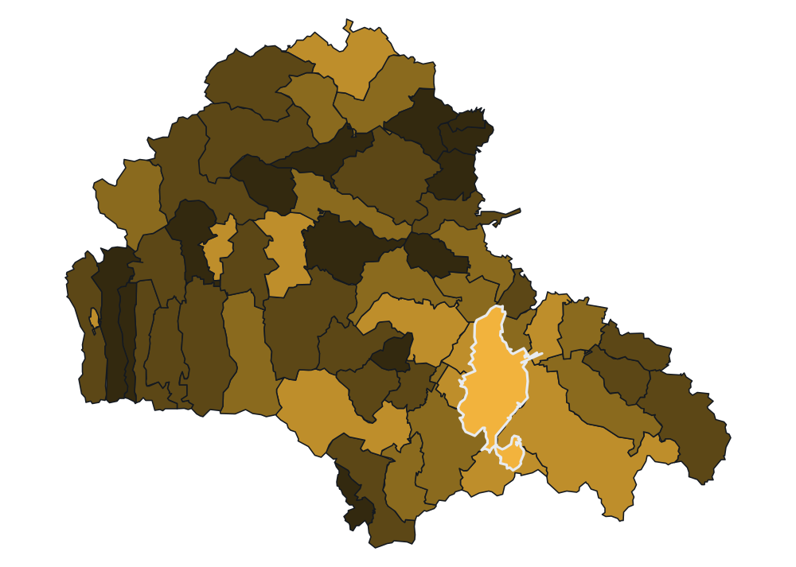

The data is in Romanian. Try deszăpezire, a company name, a CUI with or without RO, or a CPV prefix such as 45. Diacritics, case and legal forms (SRL, SA) are ignored.
caveat badges
19,599 Records[n] suspect-value Records left out[n] with no value in SEAPframework ceilings shown, not summed: [x] RON

Municipiul Brașov1.82 bn RON awarded12,104 Records · 169 authorities
RON awarded · by locality in Brașov county · log scale
< 0.5M0.5M2M8M32M +no purchases
data through · direct purchases 30 Sep 2026, awaiting the next bulk file · contracts 11 Nov 2026, current quarter crawled, provisional
top 50 by RON of matching Records
- 01MUNICIPIUL BRASOV172 Records · Municipiul Brașov · CUI 43842061,306.21M RON
- 02COMPANIA APA BRASOV SA493 Records · Municipiul Brașov · CUI 1096128367.10M RON
- 03COMUNA HARMAN24 Records · Hărman · CUI 483394127.78M RON
- 04DIRECTIA GENERALA REGIONALA A FINANTELOR PUBLICE BRASOV151 Records · Municipiul Brașov · CUI 431749527.42M RON
- 05MUNICIPIUL SACELE67 Records · Săcele19.94M RON
- 06SPITALUL CLINIC JUDETEAN DE URGENTA BRASOV801 Records · Municipiul Brașov16.16M RON
- 07MUNICIPIUL FAGARAS128 Records · Făgăraș14.48M RON
- 08ORASUL PREDEAL70 Records · Predeal11.90M RON